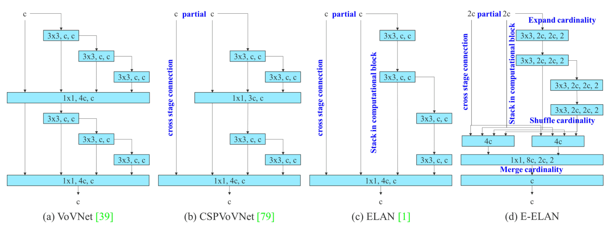
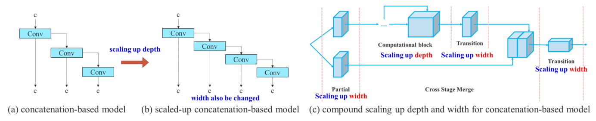

资源
全文
Abstract
YOLOv7 效果好。
1. Introduction
介绍实时目标检测。
针对不同的边缘设备，仍在开发实时目标检测器。
本文提出的方法与目前主流的实时目标检测器的发展方向不同。除了架构优化，我们提出的方法还将侧重于训练过程的优化。我们的重点将放在一些优化的模块和优化方法上，这些模块和方法可能会增加训练成本，以提高目标检测的准确性，但不会增加推理成本。
我们将所提出的模块和优化方法称为可训练的 bag-of-freebies。
模型重新参数化和动态标签分配已成为网络训练和对象检测中的重要课题。
本文的贡献总结如下：
- 我们设计了几种可训练的 bag-of-freebies 方法，使得实时目标检测可以在不增加推理成本的情况下大大提高检测精度；
- 对于对象检测方法的发展，我们发现了两个新的问题，即重新参数化的模块如何替换原始模块，以及动态标签分配策略如何处理对不同输出层的分配。此外，我们还提出了解决这些问题所带来的困难的方法；
- 针对实时目标检测器，我们提出了“扩展”和“复合缩放”方法，可以有效地利用参数和计算；
- 我们提出的方法可以有效地减少现有实时目标检测器约 40% 的参数和 50% 的计算量，并且具有更快的推理速度和更高的检测精度。
2. Related work
2.1. Real-time object detectors
目前最强的 real-time object detector: YOLO、FCOS。要成为最先进的实时物体探测器，通常需要以下特征：
- 更快、更强的网络架构；
- 一种更有效的特征集成方法；
- 更准确的检测方法；
- 更稳健的损失函数；
- 一种更有效的标签分配方法]；
- 更有效的训练方法。
在本文中，我们不打算探索需要额外数据或大型模型的自我监督学习或知识提取方法。相反，我们将为从上述（4）、（5）和（6）相关的最先进方法中得出的问题设计新的可训练的 bag-of-freebies 方法。
2.2. Model re-parameterization
模型重新参数化技术在推理阶段将多个计算模块合并为一个。模型重新参数化技术可以看作是一种集成技术，我们可以将其分为两类，即模块级集成和模型级集成。
2.3. Model scaling
模型缩放是一种放大或缩小已经设计好的模型并使其适合不同计算设备的方法。模型缩放方法通常使用不同的缩放因子，如分辨率（输入图像的大小）、深度（层数）、宽度（通道的数量）和阶段（特征金字塔的数量），以在网络参数的数量、计算、推理速度和精度方面实现良好的权衡。网络体系结构搜索（NAS）是常用的模型缩放方法之一。
3. Architecture
3.1. Extended efficient layer aggregation networks
ELAN
{kind=link}

3.2. Model scaling for concatenation-based models
模型缩放的主要目的是调整模型的一些属性，生成不同规模的模型，以满足不同推理速度的需要。
{kind=link}

4. Trainable bag-of-freebies
4.1. Planned re-parameterized convolution
我们使用梯度流传播路径来分析如何将重新参数化的卷积与不同的网络相结合。
我们还相应地设计了有计划的重新参数化卷积。
4.2. Coarse for auxiliary and fine for lead loss
深度监督是一种经常用于训练深度网络的技术。其主要概念是在网络的中间层添加额外的辅助头部，并以辅助损失为导向对浅层网络进行加权。即使对于像 ResNet 和 DenseNet 这样通常收敛良好的架构，深度监督仍然可以显著提高模型在许多任务上的性能。
4.3. Other trainable bag-of-freebies
在本节中，我们将列出一些可训练的免费包。这些免费赠品是我们在训练中使用的一些技巧，但最初的概念并不是我们提出的。这些免费赠品的训练细节将在附录中详细说明，包括：
- conv-bn-activation 拓扑中的批量归一化：这部分主要将批量归一化层直接连接到卷积层。这样做的目的是在推理阶段将批量归一化的均值和方差集成到卷积层的偏差和权重中。
- YOLOR 中的隐式知识以加法和乘法的方式与卷积特征图相结合：YOLOR 中的隐知识可以在推理阶段通过预计算简化为向量。该向量可以与先前或后续卷积层的偏差和权重相结合。
- EMA 模型：EMA 是均值教师中使用的一种技术，在我们的系统中，我们使用 EMA 模型纯粹作为最终推理模型。
5. Experiments
5.1. Experimental setup
我们使用 Microsoft COCO 数据集进行实验并验证我们的目标检测方法。我们所有的实验都没有使用预先训练过的模型。也就是说，所有的模型都是从零开始训练的。
5.2. Baselines
从结果中我们可以看出，如果与 YOLOv4 相比，YOLOv7 的参数减少了 75%，计算量减少了 36%，AP 增加了 1.5%。若和最先进的 YOLOR-CSP 相比，YOLOv7 的参数减少了 43%，计算量减少了 15%，AP 增加了 0.4%。在微小模型的性能方面，与 YOLOv4-tiny-31 相比，YOLOv7tiny 减少了 39% 的参数数量和 49% 的计算量，但保持了相同的AP。
在云 GPU 模型上，我们的模型仍然可以具有更高的 AP，同时将参数数量减少 19%，计算量减少 33%。
5.3. Comparison with state-of-the-arts
我们将所提出的方法与用于通用 GPU 和移动 GPU 的最先进的对象检测器进行了比较，我们知道所提出的方法具有最佳的速度-精度综合权衡。如果我们将 YOLOv7 微小 SiLU 与 YOLOv5-N（r6.1）进行比较，我们的方法在 AP 上的速度快 127 fps，准确率高 10.7%。此外，YOLOv7 在 161 帧/秒的帧速率下具有 51.4% 的 AP，而具有相同 AP 的 PPYOLOE-L 仅具有 78 帧/秒帧速率。在参数使用方面，YOLOv7 比 PPYOLOE-L 少 41%。如果将推理速度为 114 fps 的 YOLOv7-X 与推理速度为 99 fps 的 YOLOv5-L（r6.1）进行比较，YOLOv7-X 可以提高 3.9% 的 AP。此外，就参数和计算量而言，与 YOLOv5-X（r6.1）相比，YOLOv7-X 减少了 22% 的参数和 8% 的计算，但将 AP 提高了 2.2%。
5.4. Ablation study
5.4.1 Proposed compound scaling method
我们提出的复合缩放策略可以更有效地利用参数和计算。
5.4.2 Proposed planned re-parameterized model
为了验证我们提出的计划重新参数化模型的通用性，我们分别将其用于基于级联的模型和基于残差的模型进行验证。
5.4.3 Proposed assistant loss for auxiliary head
在辅助头的辅助损失实验中，我们比较了引导头和辅助头的一般独立标签分配方法，并比较了两种提出的引导引导标签分配方法。
6. Conclusions
在本文中，我们提出了一种新的实时目标检测器的结构和相应的模型缩放方法。此外，我们发现目标检测方法的发展过程产生了新的研究课题。在研究过程中，我们发现了重新参数化模块的替换问题和动态标签分配的分配问题。为了解决这个问题，我们提出了可训练的 bag-of-freebies 方法来提高目标检测的准确性。在此基础上，我们开发了YOLOv7系列目标检测系统，该系统获得了最先进的结果。
7. Acknowledgements
8. More comparison
YOLOv7 在 5 FPS 到 160 FPS 的速度和精度方面超过了所有已知的对象检测器，并且在 GPU V100 上具有 30 FPS 或更高的所有已知实时对象检测器中具有最高的精度 56.8%AP 测试 dev/56.8%AP min-val。YOLOv7-E6 对象检测器（56 FPS V100，55.9%AP）在速度和精度上均优于基于变换器的检测器 SWIN-L 级联掩码 R-CNN（9.2 FPS A100，53.9%AP）509% 和 2%，基于卷积的检测器 ConvNeXt XL 级联掩码 R-有线网络（8.6 FPS A100、55.2%AP）551% 和 0.7%AP，YOLOv7 的性能也优于：YOLOR、YOLOX、Scaled YOLOv4、YOLOv5、DETR，可变形 DETR、DINO-5scaleR50、ViT-Adapter-B 和许多其他物体探测器的速度和精度。此外，我们只在 MS COCO 数据集上从头开始训练YOLOv7，而不使用任何其他数据集或预先训练的权重。